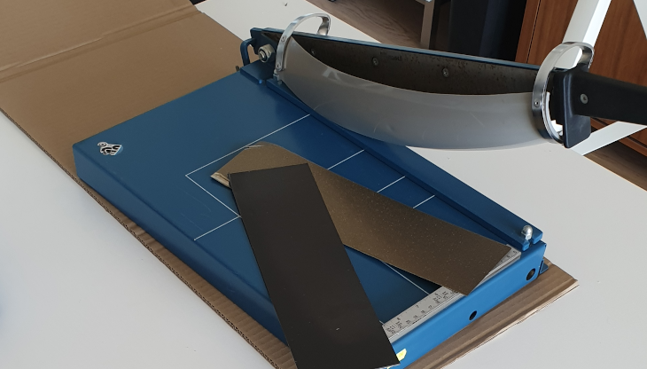
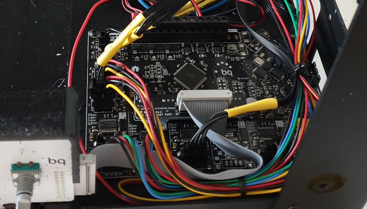
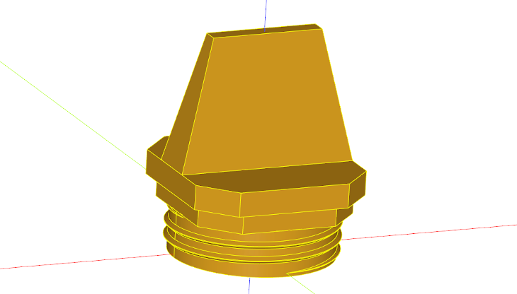
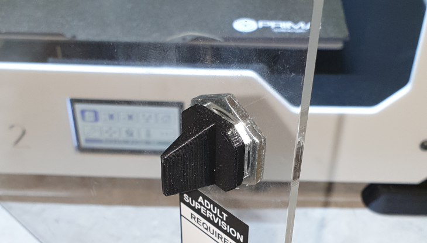
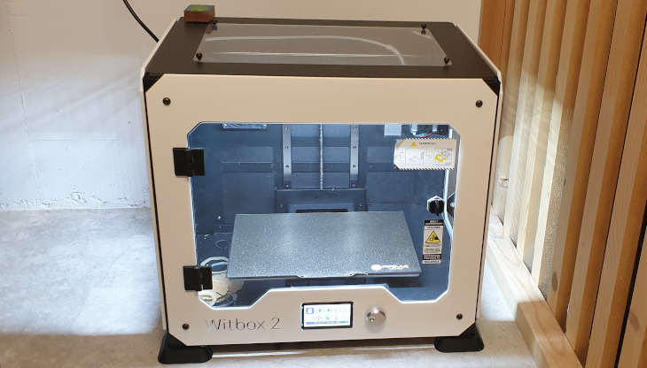
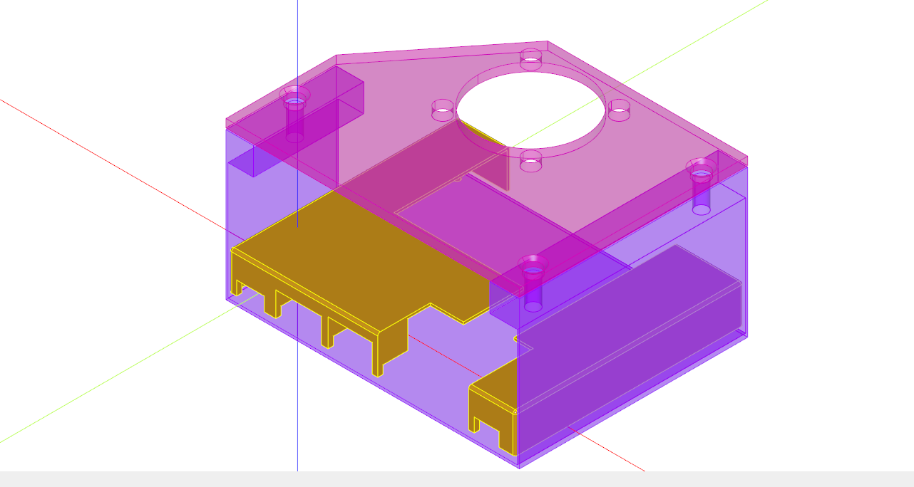
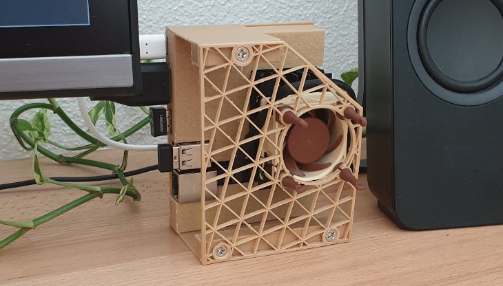
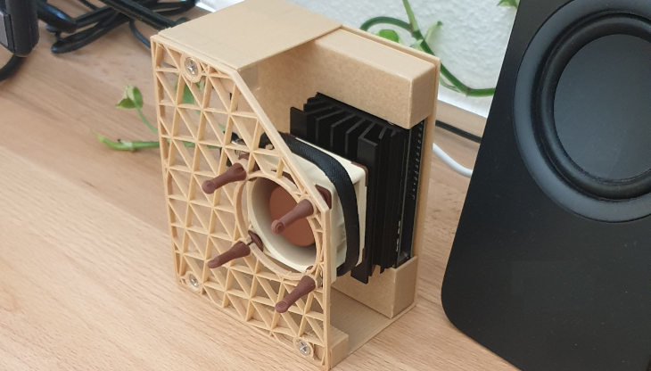

Jetson nano case and a simple screw

My journey on upgrading an second hand 3d printer and my first project with it.
Opening gif animation was made with mayo, btw.
Table of Contents
Intro
Sometime ago I acquired a jetson nano 2gb SBC (Single board Computer) and after using it a bit I felt I needed to overclock it. The problem is that it runs hot even at default clock speeds, so I needed a fan. But the fan needs to be mounted somewhere right? Yes there is some holes on the big heatsink that comes with the board but the silicone screws that come with the noctua fan don’t fit. Maybe a 3d printed case with fan mounts will do it, I thought to myself.
Unfortunately, none of the 3d printed cases I found on the web could sit on standing up position as I wanted, So I decided to make my own.
Tiny problem: As I’m back to 🇨🇭 and I left everything in 🇧🇷 I had to buy a new 3d printer. I checked the market prices and the only reasonable thing to fit my budget was an ender 3. I decided to check the second hand stuff websites and I found something promising, a fully enclosed 3d printer from a defunct company for 50 bucks less than a brand new ender 3. I bid on it and a couple of weeks later I had it. The printer is a Witbox 2 and was made by a Spanish company called bq.
From an engineers standpoint it’s a confusing printers. Some design decisions are nice and interesting and others are just terrible. I can summarize my opinions about it like this.
-
The good: The way wiring is done inside of the chamber is kind of neat. There’s a pcb attached to printer head that acts sorta of a breakout board. The wires coming from the heat cartridge, thermostat, fan and leveling probe are then directed to a flat cable. It’s much more compact and elegant then the traditional drag chains. Also on z axis it has two genuine Hiwin linear guides.
-
The bad: No heated bed.
-
The ugly: It’s a very shaky printer. People making this printer, probably skipped all mechanical vibrations classes, they did absolutely nothing to damp vibrations. The frame is made out of bent sheet metal with no cushions anywhere. Also it has DRV8825 stepper drivers but no astrosyn dampers: Bad combo.
Making the printer usable
The printer as I received had three annoyances:
- The noise / vibrations
- Glass surface (but no heated bed)
- A door lock without a key
I don’t think glass is a bad surface as long as you have a heated bed. Unfortunately I don’t. My solution to this problem was buying a PEI flex sheet. Unfortunately I couldn’t find something with the right dimensions I needed. I ended up just buying something a bit bigger and cutting it to size myself. I used a heavy duty paper guillotine to cut, which I don’t recommend and I won’t do it again this way. It worked but I took a heavy toll on the blade. I had to resharpen it after.

Now to the vibrations. The immediate solution that comes to mind is to swap the stepper drivers for modern Trinamic ones. So I disassembled the printer to check the electronics and ..
BUMMER

As you can see above they made a custom board (anything special or original) which is ok, but the stepper drivers are surface mounted. I’ll have to roll with this board for the moment. The only thing I can do for the time being is update the firmware.
Even though this bq company is dead, it is still possible to find a necro github repo 👻. The firmware there is 3 years newer than the one that was on the machine, so why not to update?
When compiling, as I expected, dependency hell. No problem though, as they provide pre compiled hex files, there is a trick. On the arduino IDE, if you click on the right buttons you can actually see the command to send the files to the microcontroller. Here on my machine it looked something like this.
/home/jupt3r/arduino-1.8.15/hardware/tools/avr/bin/avrdude -C/home/jupt3r/arduino-1.8.15/hardware/tools/avr/etc/avrdude.conf -v -patmega2560 -cwiring -P/dev/ttyUSB0 -b115200 -D -Uflash:w:/home/jupt3r/Marlin_witbox_2-508.hex
Firmware updated. Sweet
May I ask now, who locks a 3d printer ?
I don’t know why but the 3d printer comes from the factory with a lock and key. I decided to just swap it with a simple knob. It would be a nice test print, So I designed a knob with a threads that fit the nut from the keylock that came with the machine.
Here follows the cadquery code for the design.
from cadquery import *
from math import *
def helix(r0,r_eps,p,h,d=0,frac=1e-1):
def func(t):
if t>frac and t<1-frac:
z = h*t + d
r = r0+r_eps
elif t<=frac:
z = h*t + d*sin(pi/2 *t/frac)
r = r0 + r_eps*sin(pi/2 *t/frac)
else:
z = h*t - d*sin(2*pi - pi/2*(1-t)/frac)
r = r0 - r_eps*sin(2*pi - pi/2*(1-t)/frac)
x = r*sin(-2*pi/(p/h)*t)
y = r*cos(2*pi/(p/h)*t)
return x,y,z
return func
def thread(radius, pitch, height, d, radius_eps, aspect= 10):
e1_bottom = (cq.Workplane("XY")
.parametricCurve(helix(radius,0,pitch,height,-d)).val())
e1_top = (cq.Workplane("XY")
.parametricCurve(helix(radius,0,pitch,height,d)).val())
e2_bottom = (cq.Workplane("XY")
.parametricCurve(helix(radius,radius_eps,pitch,height,-d/aspect)).val())
e2_top = (cq.Workplane("XY")
.parametricCurve(helix(radius,radius_eps,pitch,height,d/aspect)).val())
f1 = Face.makeRuledSurface(e1_bottom, e1_top)
f2 = Face.makeRuledSurface(e2_bottom, e2_top)
f3 = Face.makeRuledSurface(e1_bottom, e2_bottom)
f4 = Face.makeRuledSurface(e1_top, e2_top)
sh = Shell.makeShell([f1,f2,f3,f4])
rv = Solid.makeSolid(sh)
return rv
radius = 10.0
pitch = 1.8
height = 5
d = pitch/4
radius_eps = 0.5
eps=1e-3
core = cq.Workplane("XY",origin=(0,0,-d)).circle(radius+eps).extrude(height+1.75*d)
th1 = thread(radius,pitch,height,d,radius_eps)
handle = cq.Workplane("XY").rect(20.0, 20.0).extrude(2.5) .\
faces(">Z").workplane().rect(22.0, 22.0).extrude(3.0) .\
faces(">Z").workplane().rect(22.0, 6.0) .\
workplane(offset=16.0).rect(14.0, 2.0).loft(combine=True) .\
edges("|Z").chamfer(4.0).translate((0,0,5.3))
res = core.union(th1).union(handle)
show_object(res)
 
Look at the threads entry (and exit), Awesome isn’t it ?
Of course this machine coudn’t print the threads very well, but it was enough to hold the nut savaged from the old keylock, as showed in the picture.
Here follows a picture of the printer with the new knob and the PEI flex sheet installed.

The jetson nano case
I know I have a machinist mindset, so I’m always making tools to make tools that make tools. But I have to say, It is nice to go and work on a real final product sometimes. There is a special satisfaction in using something that you created.
The project here is a jetson nano case with fan support. The case should stand in a way that the heat from the heat sink takes advantage of the natural convection. Also it should look good, because it will be on my desk.
I used again cadquery to model the case and cover. It was easy to dial in the dimensions this way. The idea here was to use the self tapping screws and the silicone mounts that came with the fan, so I didn’t need to buy any extra hardware.
import cadquery as cq
# board cover
board_length = 102.0
board_width = 81.0
height = 13.0
shell_thickness = 0.9
mount_holes_offset_x =4.8
mount_holes_offset_y =18.0
usbc_offset = 1.8
usbc_width = 10.0
usbc_height = 5.0
hdmi_offset = 16.0
hdmi_width = 16.5
hdmi_height = 9.0
singleusb_offset = 35.0
singleusb_width = 16.0
singleusb_height = 10.0
doubleusb_offset = 53.0
doubleusb_width = 16.0
doubleusb_height = 18.0
ether_offset = 68.0
ether_width = 18.0
ether_height = 18.0
usbb_offset = 88.0
usbb_width = 9.0
usbb_height = 5.0
cover = cq.Workplane("front").box(board_length, board_width, height, centered=False) .\
faces("<Z").shell(shell_thickness) .\
faces(">Z").workplane().move(18.0, 40.0).rect(61.0, 48.0, centered=False).cutThruAll() .\
faces(">Z").workplane().move(65.0, 0).rect(14.0, board_width, centered=False).cutThruAll() .\
faces(">Z[-2]").workplane().move(mount_holes_offset_x, -mount_holes_offset_y).rect(86.0, -58.0, centered=False, forConstruction=True).vertices().circle(2.0).extrude(height-3.0) .\
faces(">Z[-2]").workplane().move(mount_holes_offset_x, -mount_holes_offset_y).rect(86.0, -58.0, centered=False, forConstruction=True).vertices().circle(1.25).extrude(height) .\
faces("<Y[-2]").workplane().rect(-board_length,-height, centered=False).extrude(10.0) .\
faces("<Z").workplane().move(usbc_offset, -10.0).rect(usbc_width, 10.0+shell_thickness, centered=False).cutBlind(-usbc_height) .\
faces("<Z").workplane().move(hdmi_offset, -10.0).rect(hdmi_width ,10.0+shell_thickness, centered=False).cutBlind(-hdmi_height) .\
faces("<Z").workplane().move(singleusb_offset, -10.0).rect(singleusb_width ,10.0+shell_thickness, centered=False).cutBlind(-singleusb_height) .\
faces("<Z").workplane().move(doubleusb_offset, -18.2).rect(doubleusb_width ,24.0, centered=False).cutBlind(-doubleusb_height) .\
faces("<Z").workplane().move(ether_offset, -22.5).rect(ether_width ,24.0, centered=False).cutBlind(-ether_height) .\
faces("<Z").workplane().move(usbb_offset, -10.0).rect(usbb_width ,10.0+shell_thickness, centered=False).cutBlind(-usbb_height) .\
faces("<Z").workplane().move(0, -1.0).rect(board_length, -10.0, centered=False).cutBlind(-3.0)
cover = cover.translate((3, shell_thickness, 3))
# case
case_length = 105
case_height = 52
case_thickness = 1.5
top_thickness = 3.0
holes_offset_x = -2.0
holes_offset_y = 18.0
case_back = cq.Workplane("front").box(case_length+case_thickness, board_width+shell_thickness*2, shell_thickness, centered=False) .\
faces("<Z").workplane().rect(case_thickness/2.0, -40.0, centered=False).extrude(-case_height-case_thickness) .\
faces("<Z").workplane().move(case_length+case_thickness/2.0, 0).rect(case_thickness/2.0, -board_width-shell_thickness*2, centered=False).extrude(-case_height-case_thickness) .\
faces(">Z").workplane().rect(10.0, 40.0, centered=False).extrude(-10.0) .\
faces(">Z").workplane().move(case_length+case_thickness/2.0, 0).rect(-10.0, +board_width+shell_thickness*2, centered=False).extrude(-10.0) .\
faces(">Z").workplane().pushPoints([(5.0, 20.0 ), (100.0+case_thickness, 10.0), (100.0+case_thickness, 71.0)]).hole(4.6, 10.0)
case_top = cq.Workplane("front").box(case_length+case_thickness, board_width+shell_thickness*2, top_thickness, centered=False) .\
faces(">Z").workplane().pushPoints([(5.0, 20.0 ), (100.0+case_thickness, 10.0), (100.0+case_thickness, 71.0)]).cskHole(5.8, 8.0, 82.0) .\
faces(">Z").workplane().move(0, 40).lineTo(34.0, board_width+shell_thickness*2).lineTo(0, board_width+shell_thickness*2).close().cutThruAll() .\
faces(">Z").workplane(centerOption="CenterOfBoundBox").move(holes_offset_x, holes_offset_y).rect(32.0, 32.0, forConstruction=True).vertices().hole(5.6) .\
faces(">Z").workplane(centerOption="CenterOfBoundBox").move(holes_offset_x, holes_offset_y).hole(38.5)
case_top = case_top.translate((0,0, 54.0))
  
There it is the case in its full glory. I liked the way it turned out. Even if at some point I decide to use the fan somewhere else, I can still use the cover, as it is split in two parts (check the opening gif). I designed it this way because if I ever need to use any GPIO I can easily remove that side of the cover. The fan header is also nice and accessible this way.
I have to mention that mounted this way, with the silicone mounts from noctua, this setup is absolutely silent. I really can’t hear the fan under 60% PWM, not even very close to it.
That’s about it for today, 🤘🏽
Thanks for reading.